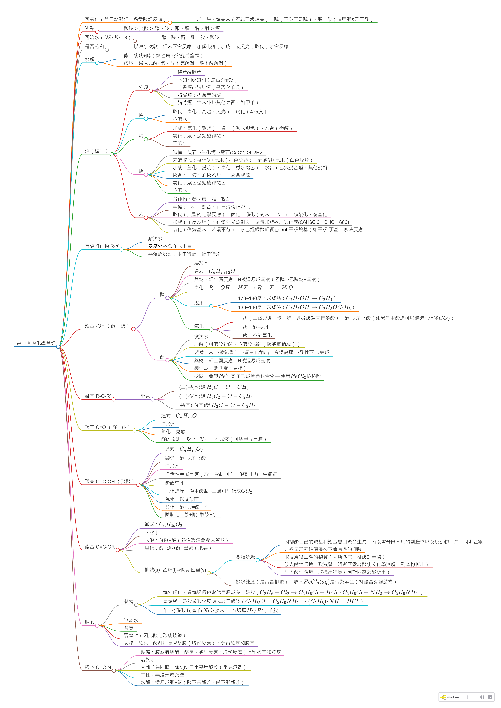

高中有機化學筆記 (內附大大的分類心智圖)
前言
高中最後一次考試，想說要有個善終，也怕自己一不小心被當了，很認真讀了兩三天久久沒碰的化學，讀的時候常常想要找那種超大的表簡單說每一種烴類、官能基的性質、反應，可能就像是一些程式語法的 cheat sheet，能夠在學過之後，重新看到就能馬上回想起來，才不用每次寫題目都要翻講義好久，可惜沒有找到類似的東西，就只好自己做一個了。
注意
這個心智圖應該只適用於那些曾經有讀過書的人快速回想，如果還沒學過的話應該會完全看不懂，其中有一些化學式為了精簡大都只寫出最重要的部分，有疑惑處請直接翻閱教科書，若是我有寫錯我是遺漏的部分敬請指教
- 心智圖 (線上檢視版)
- 心智圖 (pdf)
- 心智圖 (png)

{kind=link}
可氧化（與二鉻酸鉀、過錳酸鉀反應）
- 烯、炔、烷基苯（不為三級烷基）、醇（不為三級醇）、醛、酸（僅甲酸 & 乙二酸）
沸點
- 醯胺 > 羧酸 > 醇 > 胺 > 酮、醛、酯 > 醚 > 烴
可溶水（低碳數 <=3）
- 醇、醛、酮、酸、胺、醯胺
是否飽和
- 以溴水檢驗，但 == 苯不會反應 ==（加催化劑（加成）或照光（取代）才會反應）
水解
- 酯：羧酸 + 醇（鹼性環境會變成鹽類）
- 醯胺：還原成酸 + 氨（酸下氨解離、鹼下酸解離）
烴（碳氫）
分類
- 鏈狀 or 環狀
- 不飽和 or 飽和（是否有 π 鍵）
- 芳香烴 or 脂肪烴（是否含苯環）
- == 脂環烴 ==：不含苯的環
- == 脂芳烴 ==：含苯外掛其他東西（如甲苯）
烷
- 取代：鹵化（高溫、照光）、硝化（475 度）
- 不溶水
烯
- 加成：氫化（變烷）、鹵化（秀水褪色）、水合（變醇）
- 氧化：紫色過錳酸鉀褪色
- 不溶水
炔
- 製備：灰石 -> 氧化鈣 -> 電石 (CaC2)->C2H2
- 末端取代：氯化銅 + 氨水（紅色沈澱）、硝酸銀 + 氨水（白色沈澱）
- 加成：氫化（變烷）、鹵化（秀水褪色）、水合（乙炔變乙醛、其他變酮）
- 聚合：可導電的聚乙炔、三聚合成苯
- 氧化：紫色過錳酸鉀褪色
- 不溶水
苯
- 衍伸物：萘、蔥、菲、聯苯
- 製備：乙炔三聚合、正己烷環化脫氫
- 取代（典型的化學反應）：鹵化、硝化（硝苯、TNT）、磺酸化、烷基化
- 加成（不易反應）：在紫外光照射與三氯氣加成 -> 六氯化苯 (C6H6Cl6、BHC、666)
- 氧化（僅烷基苯，苯環不行）：紫色過錳酸鉀褪色 ==but== 三級烷基（如三級 - 丁基）無法反應
有機鹵化物 R-X
- 難溶水
- == 密度 > 1==-> 會在水下層
- 與強鹼反應：== 水中得醇，醇中得烯 ==
羥基 -OH （醇、酚）
醇
- 溶於水
- 通式：\(C_nH_{2n+2}O\)
- 與鈉、鉀金屬反應：H 被還原成氫氣（乙醇 -> 乙醛鈉 + 氫氣）
- 鹵化：\(R-OH+HX\rightarrow R-X + H_2O\)
- 脫水：
- 170~180 度：形成烯（\(C_2H_5OH\rightarrow C_2H_4\)）
- 130~140 度：形成醚（\(C_2H_5OH\rightarrow C_2H_5OC_2H_5\)）
- 氧化：
- 一級（二鉻酸鉀一步一步、過錳酸鉀直接變酸）：醇 \(\rightarrow\) 醛 \(\rightarrow\) 酸（如果是甲酸還可以繼續氧化變 \(CO_2\)）
- 二級：醇 \(\rightarrow\) 酮
- 三級：不能氧化
酚
- 微溶水
- 弱酸（可溶於強鹼，不溶於弱鹼（碳酸氫鈉 aq））
- 製備：苯 \(\rightarrow\) 被氯魯化 \(\rightarrow\) 氫氧化鈉 aq、高溫高壓 \(\rightarrow\) 酸性下 \(\rightarrow\) 完成
- 與鈉、鉀金屬反應：H 被還原成氫氣
- 製作成阿斯匹靈（見酯）
- 檢驗：會與 \(Fe^{3+}\) 離子形成紫色錯合物 \(\rightarrow\) 使用 \(FeCl_3\) 檢驗酚
醚基 R-O-R’
- 通式：\(C_nH_{2n+2}O\)
- 製備：兩個醇加起來脫水（130~140 度）
- 難溶於水
- 沸點低
- 化性：安定，不易進行反應
常見
- (二) 甲 (基) 醚 \(H_3C-O-CH_3\)
- (二) 乙 (基) 醚 \(H_5C_2-O-C_2H_5\)
- 甲 (基) 乙 (基) 醚 \(H_3C-O-C_2H_5\)
羰基 C=O （醛、酮）
- 通式：\(C_nH_{2n}O\)
- 溶於水
- 氧化：見醇
- 醛的檢測：多侖、婓林、本式液（可與甲酸反應）
羧基 O=C-OH （羧酸）
- 通式：\(C_nH_{2n}O_2\)
- 製備：醇 \(\rightarrow\) 醛 \(\rightarrow\) 酸
- 溶於水
- 與活性金屬反應（Zn、Fe 即可）：解離出 \(H^+\) 生氫氣
- 酸鹼中和
- 氧化還原：僅甲酸 & 乙二酸可氧化成 \(CO_2\)
- 脫水：形成酸酐
- 酯化：醇 + 酸 = 酯 + 水
- 醯胺化：胺 + 酸 = 醯胺 + 水
酯基 O=C-OR
- 通式：\(C_nH_{2n}O_2\)
- 不溶水
- 水解：羧酸 + 醇（鹼性環境會變成鹽類）
- 皂化：酯 + 鹼 -> 醇 + 鹽類（肥皂）
- 柳酸 (s)+ 乙酐 (l)-> 阿斯匹靈 (s)
- 實驗步驟
- 因柳酸自己的羧基和羥基會自聚合生成，所以需分離不用的副產物以及反應物，純化阿斯匹靈
- 以過量乙酐確保最後不會有多的柳酸
- 取反應後固態的物質（阿斯匹靈、柳酸副產物）
- 放入鹼性環境，取液體（阿斯匹靈為酸能夠化學溶解，副產物析出）
- 放入酸性環境，取攜出物質（阿斯匹靈遇酸析出）
- 檢驗純度（是否含柳酸）：放入 \(FeCl_3(aq)\) 是否為紫色（柳酸含有酚結構）
- 實驗步驟
胺 N
- 製備
- 烷先鹵化，鹵烷與氨做取代反應成為一級胺（\(C_2H_6+Cl_2\rightarrow C_2H_5Cl+HCl\)、\(C_2H_5Cl+NH_3\rightarrow C_2H_5NH_2\) ）
- 鹵烷與一級胺做取代反應成為二級胺（\(C_2H_5Cl+C_2H_5NH_2\rightarrow (C_2H_5)_2NH+HCl\) ）
- 苯 \(\rightarrow\)(硝化) 硝基苯 (\(NO_2\) 接苯）\(\rightarrow\)(還原 \(H_2/Pt\)）苯胺
- 溶於水
- 會臭
- 弱鹼性（因此酸化形成銨鹽）
- 與酯、醯氯、酸酐反應成醯胺（取代反應）：保留醯基和胺基
醯胺 O=C-N
- 製備：胺或氨與酯、醯氯、酸酐反應（取代反應）保留醯基和胺基
- 溶於水
- 大部分為固體，除 N,N - 二甲基甲醯胺（常見溶劑）
- 中性，無法形成銨鹽
- 水解：還原成酸 + 氨（酸下氨解離、鹼下酸解離）